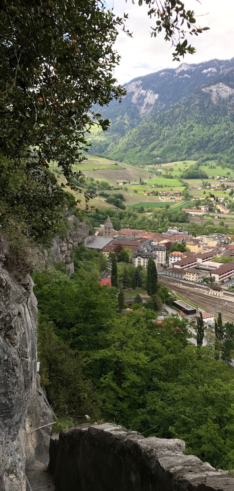
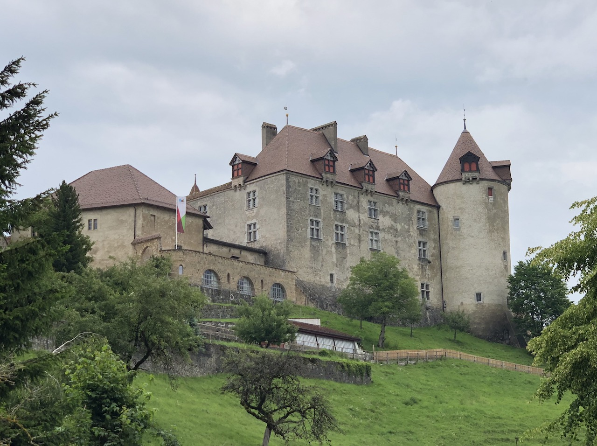

June 16, 2018
Sightseeing Around Lausanne
For the benefit those visiting but not yet familiar with EPFL, Lausanne, or other parts of the Lake Geneva Region, I thought I’d write a quick summary of some of my personal favorite places and sights in the area. This is completely my personal perspective; I make no pretense at being objective or unbiased here and am not trying to write a proper travel guide. But with that in mind, I hope you might find something interesting here.
In Lausanne
The heart of Lausanne, worth wandering around in to get a feel for the city, is in the area of the Flon, Riponne, and Bessieres stops on the M2 line of the Lausanne Metro. From the main train station, climb the steep pedestrian street Rue du Petit-Chêne straight up the hill and you get to St-Francois Church near Flon. Get used to climbing; Lausanne embraces its three dimensions.
Place de la Palud has the city hall, a colorful fountain, and a mechanical clock to entertain the kids every hour. The cathedral has a tower you can climb during the day for a great view, or at night see the nightwatchman preserve his 700-year tradition of calling out the hour.
Château Saint-Maire, at the other end of the old town area on the hill, is a pretty castle but normally doesn’t let tourists in because it’s been busy hosting the region’s government since around 1400.
If you like museums, Lausanne’s unique “must-see” museum is the Collection de l’Art Brut, exhibiting the work of artists who were disconnected from mainstream art education or culture – often producing pieces both naïve and amazingly intricate, as if by a child with a 20-year attention span.

The Hermitage museum is small but often hosts excellent temporary exhibitions, and is on a pleasant park walk (i.e., climb) up to Lake Sauvabelin, and its tower with a view even more amazing than the cathedral but missing the nightwatchman.
At the downslope end of the M2 line is Ouchy, with pleasant lakeside walks in both directions. A short walk east along the lake is the Olympic park and museum, home of the famous committee the locals call “vacuum cleaners” for what they do to money. The lakeside walk west of Ouchy is a pleasant way to get to or from EPFL if you have an hour to spare, but the walk east of Ouchy to Lutry is even prettier. The half-hour boat ride across the lake to Évian-les-Bains, where that water comes from, is also pleasant.
Lavaux
The most jaw-droppingly beautiful area near Lausanne is Lavaux, just east of the city, where medieval monks figured out what amazing Chasselas wines the sunny south-facing slopes could produce. I like to take a train to Grandvaux and have a drink with a view or walk in any direction, but if you have a few hours, the hike from St-Saphorin to Lutry is wonderful. The small towns in the area offer plenty of opportunities for wine-tasting distraction along the way.
Montreux and Chillon
If you or your kids like castles, Chillon is the one to see: towers, medieval living quarters, walkable battlements with window-slits of every shape, a dungeon that held a prisoner famous enough for Lord Byron to wax poetic about, all-natural gravity-flush toilets… Chillon is a pleasant half-hour lakeside walk from Montreux, another pretty city on the east end of the lake with jazz festivals and jazz cafes.
Saint-Maurice
A bit farther southeast of Montreux, in Valais, is the charming town of Saint-Maurice, nestled between sheer rock cliffs and with a main street that someone thousands of years ago clearly aligned for a perfect view of the mountains. In the town is an abbey that has been operating continuously for 1500 years and makes one of my favorite radioactive-green herbal liqueurs.
A short but steep hike halfway up the nearby cliff is a chapel cut into the rock. A few minutes’ walk north of town is the castle, which doubles as a museum that sometimes has interesting exhibitions. A hike up the hill behind the castle leads to the fairy cave with an incredible underground lake and waterfall. (And fairies of course.)
Gruyères
A lovely train ride north of the lake is the town of Gruyères, where the famous cheese originated. Besides another amazing hilltop castle, it also has a cheese factory that you can tour. They also sell my other favorite radioactive-green herbal liqueur. And what quaint medieval town would be complete without a museum and bar dedicated to H.R. Giger, the father of Sigourney Weaver’s alien. Fits right in!